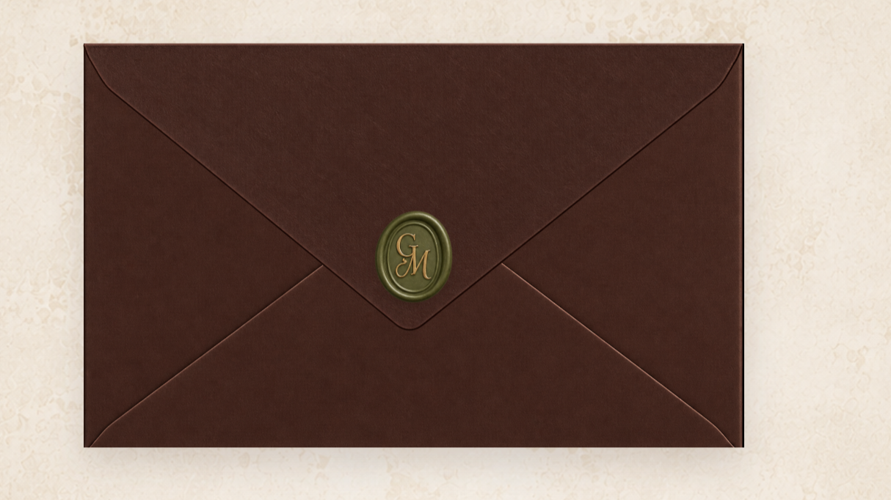
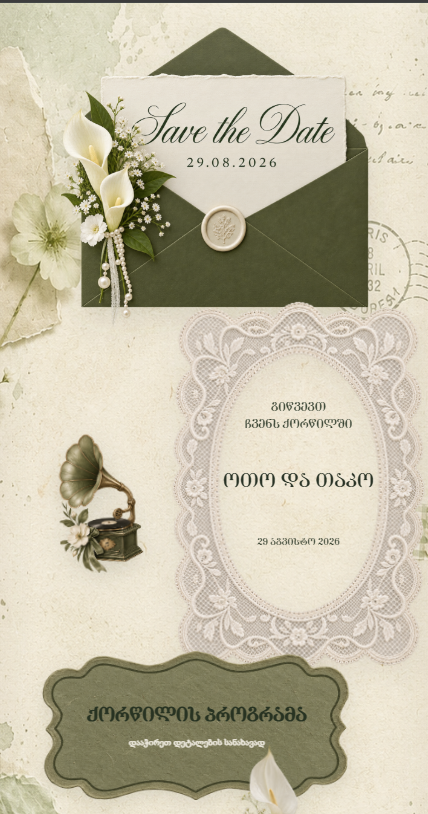
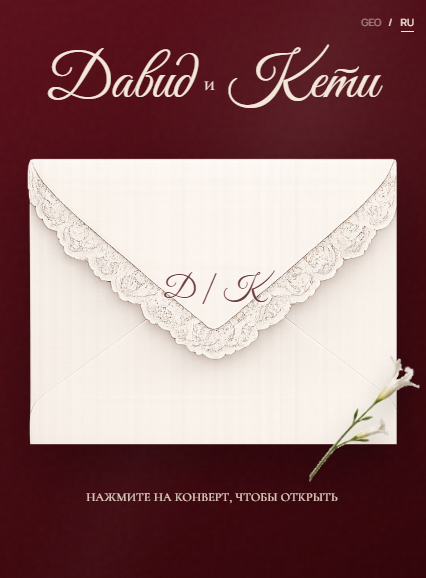
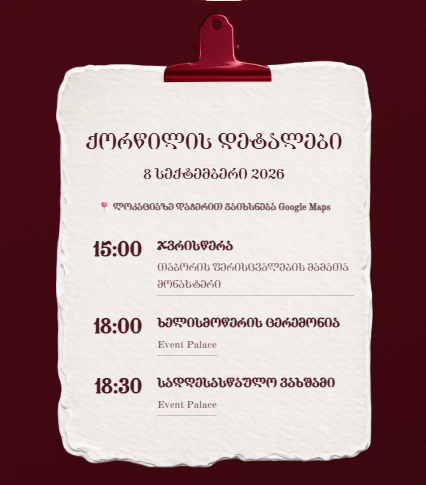
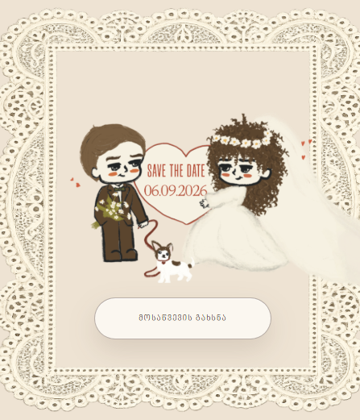

RSVP
Guest response capture built into the flow, not bolted on as a separate form.
Five real couples, five live sites, one underlying system of RSVP, maps, schedules, countdowns, music, galleries, multilingual UI, animations and guest management, rebuilt in a different visual language every time so no two invitations feel templated.
Every wedding site needs the same practical pieces. How do I RSVP, where is it, when does it start, what's the dress code, where are the photos afterward. I built that capability once, as a set of patterns I trust: RSVP handling, schedules, countdowns, maps, galleries and bilingual copy. What changes each time is everything a guest actually notices, meaning palette, type, pacing and motion, because the art direction is what makes a couple feel like the invitation is theirs.
Guest response capture built into the flow, not bolted on as a separate form.
Venue, timing and day-of logistics presented so guests don't have to ask.
A live countdown that builds anticipation from the moment the link is opened.
Ambient audio and photo galleries used selectively, per couple's taste.
Georgian / English content structured for both scripts from the start.
A lightweight way for couples to track who has responded, without a spreadsheet mess.





Each of these was a real couple with real opinions about their own wedding, which is a harder brief than a single portfolio piece, because the "client" changes every time and the bar for feeling personal resets with them. Running five of these end to end is what taught me to separate the parts of a build that should be systematised from the parts that should never be.